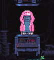 Kaiju Kingz Turnables Kaiju Kingz 转盘 NFT - 常见问题（FAQ） ▶ 什么是 Kaiju Kingz 转盘？ Kaiju Kingz Turnables 是一个 NFT（非同质代币）集合。存储在区块链上的数字艺术品集合。 ▶ 有多少 Kaiju Kingz Turnables 代币？ 总
KaijuDoodles 我们欢迎您来到 Kaiju Doodles 的世界！Kaiju Doodles 是以太坊区块链上 555 个随机生成的 NFT 的集合。通过该系列中可以看到的各种配件和特征，每个 Kaiju 都是独一无二的。稀
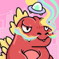 KaijuFrenz-Genesis 弗伦茨到金兹。KaijuFrenz 是一个 6,666 个算法生成的 Kaijus 集合，它们在元节中横行。加入我们的横冲直撞和！咆哮。 KaijuFrenz：Genes
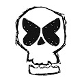 KALASH47 欢迎来到 OpenSea 上的 KALASH47 之家。布兰·西蒙森 (Bran Symondson) 的 1047 个 NFT 合集，士兵转为雕塑家。一位以 AK47 为媒介的英国艺术家，将可以说是世界上最危险的武器变成了艺术…… KALASH47
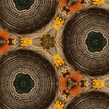 KaleidoscopePatterns 这是一个 NFT 集合，包含 5,000 种独特的万花筒状图案。销售所得将用于发展疲惫的迪诺高尔夫俱乐部 通过购买任何 NFT，您将获得终生（也包括商业）的专有使用
KamaGang: The VSFW Edition KamaGang：VSFW 版 NFT - 常见问题（FAQ） ▶ 什么是 KamaGang：VSFW 版？ KamaGang：VSFW 版是一个 NFT（不可替代令
Kamon Symbols by Hakko Daiodo 这是由 On-Chain Asset Store 提供支持的完全链上 NFT 集合之一。家纹是日本的传统，代表着每个家庭的身份。所有矢量资产均由 Hakko Daiodo创建和提供。 这是“链上资产商
Kane Mayfield - Identity - A Year & A Day Kane Mayfield - A Year & A Day NFT - 常见问题（FAQ） ▶ 什么是凯恩梅菲尔德 - 一年和一天？ Kane Mayfield - A Year & A Day 是一个 NFT（不可替代代币）系列。存储在区块链上的数
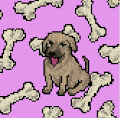 Kangal One Year Anniversary 一个构建终极 dApps 生态系统的 DAO 生态系统将由仅通过质押铸造的实用代币 $TEAK 提供支持 Kangal 一周年 NFT - 常见问题（FAQ） ▶ 什么是 Kangal 一周年纪念日？ Kangal 一周年纪念日
Kangaroo Heroes Original Kangaroo Heroes 是 5,000 个独特且随机生成的 NFT 的集合，可以访问全国各地的金融知识活动和课程，我们在其中讨论投资、税收、小企业增长等。此外，您的袋鼠英雄将作为 2022
Kangaroo Punch Club NFT OfficiaI 一款独特的#P2E 3D 绘制袋鼠游戏，在 Metaverse 中展开战斗。由 The Grinch 和 Minions 艺术家 Eddy Tavus 创作。 Kangaroo PunchClub NFT！NFT - 常见问题（FAQ） ▶ 什么是 Kangaroo PunchClub NFT！？ Kangaroo PunchClub
Kanpai VIP Pass Kanpai VIP Pass NFT - 常见问题（FAQ） ▶ 什么是看牌VIP通行证？ Kanpai VIP 通行证是一个 NFT（Non-fungible token）集合。存储在区块链上的数字
KAPE PRIME GENESIS KAPE PRIME GENESIS 统计数据 创建于 6 个月前 3,333 代币供应 6.9% 费用 过去 7 天没有售出 KAPE PRIME GENESIS。 基于多边形区块链 Discord的纯艺术项目 KAPE PRIME GENESIS NFT - 常见问题
Kape Ukraine Kape 乌克兰统计 创建于 4 个月前 20 代币供应 0% 费用 过去 7 天没有出售 Kape 乌克兰。 Kape prime 10 限量版动画乌克兰 Kapes 100% 收益将捐赠给乌克兰政府 Eth 钱包 Kape 乌克兰 NFT - 常见问
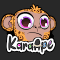 KaraApe KaraApe 是 5,555 个随机生成的 Ape NFT 的集合。每个 KaraApe 拥有 100 多种丰富多彩的特殊特征，都是独一无二的，随时可以作为您的 PFP 在元宇宙中摇摆不定。 KaraApe NFT - 常见问题（FA
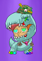 KaraKids KaraKids 是 5,555 个生活在以太坊区块链上的集合 KaraKids NFT - 常见问题（FAQ） ▶ 什么是 KaraKids？ KaraKids 是一个 NFT（不可替代令牌）集合。存储在区块链上的数字
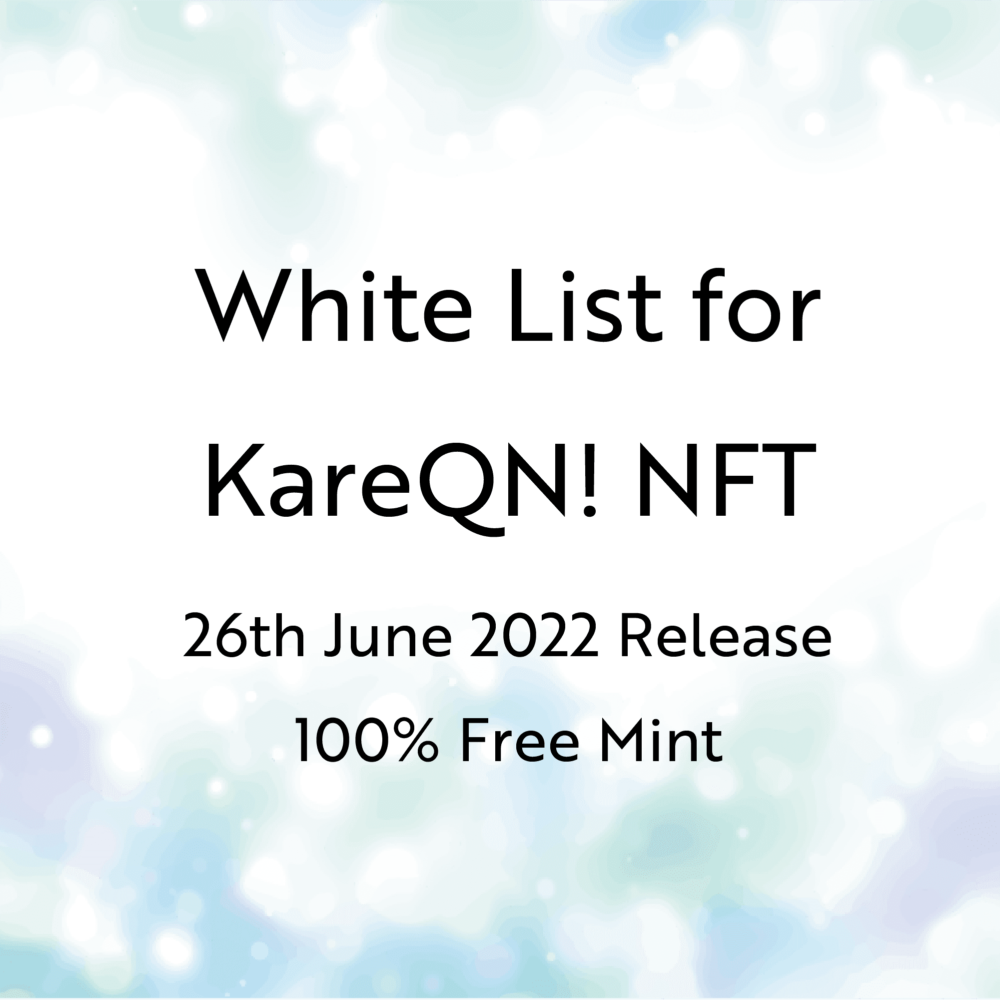 KareQN WhiteList NFT KareQN 白名单 NFT NFT - 常见问题（FAQ） ▶ 什么是 KareQN 白名单 NFT？ KareQN WhiteList NFT 是一个 NFT（Non-fungible token）集合。存储在区块链上的数字艺
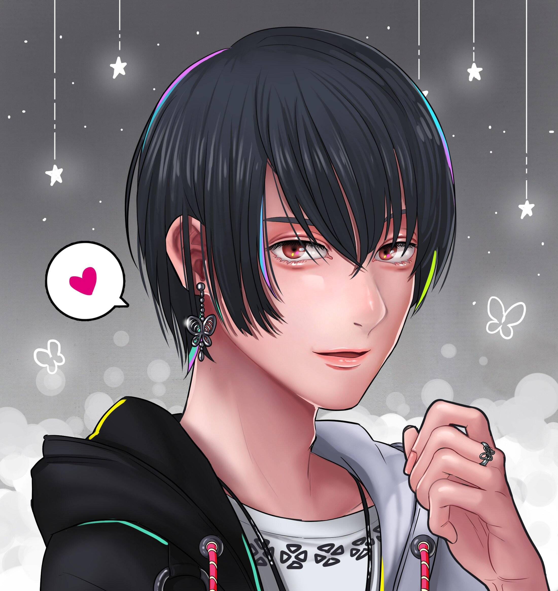 KareQN! with all my heart 卡瑞QN！全心全意 NFT - 常见问题（FAQ） ▶ 什么是 KareQN！一心一意？ 卡瑞QN！我全心全意地收藏一个 NFT（不可替代令牌）。存储在区块链上
Karin's Art Collection 卡林斯艺术收藏 完全原创的艺术收藏品，自由表达卡琳的艺术。 我的目标是创作不受任何事物约束的免费艺术品，例如活跃在 Web 3.0 中的艺术家。 我们的目标是通
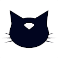 Karma Cats NFT 所有持有者均可免费获得 3D 业力猫。 Karma Cats 正在打造首个由持有人所有的瑜伽静修和生活方式服装品牌。5,555 只受到精神启发的猫，提高了集体振动。10
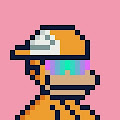 Karma.wav Karma.wav 统计 创建于 6 个月前 60 代币供应 10% 费用 过去 7 天内没有出售任何 Karma.wav。过去 30 天最畅销的 Karma.wav NFT 由 Karma.wav 在 Sound 上创建。在https://soun
Karory Collaboration Girls Karory Collaboration Girls NFT - 常见问题（FAQ） ▶ 什么是 Karory Collaboration Girls？ Karory Collaboration Girls 是一个 NFT（非同质代币）系列。存储在区块链上的数字艺术品集合。 ▶ 有多少 Karory Collaboration Girls 代币
KARTAL CLUB KARTAL CLUB NFT - 常见问题（FAQ） ▶ 什么是 KARTAL 俱乐部？ KARTAL CLUB 是一个 NFT（Non-fungible token）集合。存储在区块链上的数字艺术品集合。 ▶ 有
Kat Nolte 过去 7 天没有售出 Kat Nolte。 数字油画 - 写实肖像 Kat Nolte NFT - 常见问题（FAQ） ▶ 什么是 Kat Nolte？ Kat Nolte 是一个 NFT（非同质代币）集合。存储在区
Katana N Samurai 🎴 Katana N' Samurai 是生活在区块链中的 10,000 个独特的数字武士的集合。🎴 💮💮💮 不是2021，是1700。💮💮💮 🏮🏮🏮 我们要记录区块链世界的历史。🏮🏮🏮 🏮 我们正
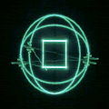 Kate the Cursed 13 Editions Katherina “Kate the Cursed” Jesek（生于 1999 年）是一位来自纽约市郊区的多媒体数字艺术家和跨性别活动家。她的作品专注于真实的、过时的显示技术
Kathie Lee Gifford Kathie Lee Gifford 系列通过纽约市造福儿童协会以及The Rock、The Road 和 Rabbi Foundation向 Kathie 心爱的粉丝和她的慈善使命致敬。 由 Kathie 手工制作的 500 Pioneer Stars 的
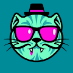 KatMonstarz Katmonstarz 是一个社区驱动的收藏品项目，收藏规模为 2,500 个，每个 Katmonstarz 允许其所有者投票、获得 nft 掉落和收入。加入 Kat 包。 很久以前，猫和星星在以太坊上和睦相处。 发生
Kawaii Club Cuties Kawaii Club 是以太坊区块链上最可爱的 10,101 名女孩！随机生成且完全独特，Cuties 与 Kaycee 一起进行有趣的冒险。Cutie 持有者可以沉浸在 Kaycee 的生活中，还可以独
Kawaii Girls & Animals Collection Collectibles Kawaii Girls & Animals Collection Collectibles NFT - 常见问题（FAQ） ▶ 什么是 Kawaii Girls & Animals Collection 收藏品？ Kawaii Girls & Animals Collection Collectibles 是一个 NFT（非同质代币）系列。存储在区块链上的数字艺术品集合。 ▶ 有
Kazuki 邪恶的一树诞生⛩️😈。凯文消耗 azuki 的力量来报复他所有的敌人。 一树统计 创建于 5 个月前 292 代币供应 5% 费用 过去 7 天没有出售一树。 Kazuki NFT - 常见问题（FAQ
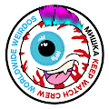 Keep Watch Crew Keep Watch Crew (KWC) 是 1269 个（合同无限期暂停）独一无二的 Keep Watch 眼球 NFT 的集合。每一个都是独一无二的，正如名字所述，收集这个项目会让你成为 Keep Watch Crew 的一员。除了拥有
Keg Plebs Official Web3 本土品牌与世界各地一流的啤酒厂合作。由当地社区和 NFT 合作伙伴驱动的新时代网络和经济。 Keg Plebs NFT - 常见问题（FAQ） ▶ 什么是 Keg Plebs？ Keg Plebs 是一
kev0 (polygon) Kev0 是一个独特的全链 NFT 集合，由 4004 个僵尸妖精组成，基于 KEVoLUTION 链游戏。 kev0（多边形）NFT - 常见问题（FAQ） ▶ 什么是 kev0（多边形）？ kev0
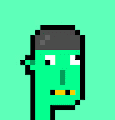 Kevin Aliens Apes Punks 凯文外星人猿朋克统计 创建于 6 个月前，246 代币供应，5% 费用 过去 7 天没有售出 Kevin Aliens Apes Punks。 我们是 Kevin Alien 和 Apes Punks 铸币厂：0.005 ETH： 每个
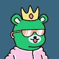 Kevin Bear 凯文熊数据 创建于 6 个月前，1,240 代币供应，5% 费用 过去 7 天没有售出任何 Kevin Bear。 4,000 个独特的 Bear Avatar NFT 受 Kevin 的启发并存在于以太坊区块链上。 Kevin Bear
Kevin Doodles NFT 凯文涂鸦 NFT 统计 创建于 6 个月前，398 代币供应，5% 费用 过去 7 天没有售出 Kevin Doodles NFT。 由 DEGENS 创造，为 DEGENS。为共鸣而来，为迷因而留！DISC
Kevin Everyday NFT 凯文日常 NFT 统计 创建于 6 个月前，3,000 代币供应，5% 费用 过去 7 天没有售出 Kevin Everyday NFT。 Henlo，在内心深处，我们都是凯文，我们需要朋友。超
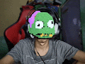 Kevin Everyday Selfies 项凯文日常自拍统计 创建于 6 个月前，503代币供应，7% 费用 过去 7 天没有售出 Kevin Everyday Selfies。 凯文的日常照片集。没有白名单，没有路线图，只有
Kevin find stuff while wondering 这将是 w/l 和部分实验的一部分，但可能会付出 100% 的拥抱或更多。我是凯文。很高兴见到你 Kevin 在想 NFT 的同时找东西 - 常见问题 (FAQ) ▶ 什么是凯文一边想一边找东西？
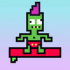 Kevin Kook Surfers 666 Crypto Kook Surfers，但它是“凯文”版！他们是卑鄙的，绿色的，而且眼睛是歪的！成为这个传奇模因的一部分，并拥有一段历史！切碎凯夫·道格！！！
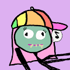 Kevin Mfer Chicks 凯文·姆弗小鸡数据 创建于 6 个月前 500 代币供应 7% 费用 过去 7 天没有售出 Kevin Mfer 小鸡。 这 500 个 Kevin Mfer 小鸡系列是为了纪念 Pixelmon 的历史揭示和#KEVIN 的诞生而创建
Kevin Mfer Official Kevin Mfer 官方数据 创建于 6 个月前，480 代币供应，7% 费用 过去 7 天内没有任何 Kevin Mfer Official 售出。 第一个 Meme NFT 收藏 3333 个 NFT 作品的集合将成为下一个永远改变 NFT 历史的
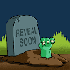 Kevin Nation Kevin Nation NFT 在过去 7 天内售出 1 次。Kevin Nation 的总销售额为 2.2 美元。一个 Kevin Nation NFT 的平均价格为 2.2 美元。有 490 名 Kevin Nation 所有者，总共拥有 1,540 个代币。 这是最可爱的凯
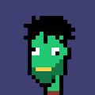 Kevin Phunks 555 凯文斯，但彭克斯。在 Twitter 上关注我们@KevinPhunksNFT Kevin Phunks NFT - 常见问题（FAQ） ▶ 什么是 Kevin Phunks？ Kevin Phunks 是一个 NFT（非同质代
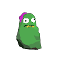 Kevin Rocks NFT 凯文摇滚 NFT more_horiz* 隐形发射！！1069 Free Kevin Rocks 使用最安全和最便宜的方式来铸币。售罄！ 手推车合约的创建者是 Twitter 上的@rarity_Garden，我们无论
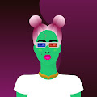 Kevin WOW 凯文WOW统计 创建于 6 个月前，555 代币供应，7.5% 费用 过去 7 天没有售出 Kevin WOW。 555 Kevin WOW 生活在以太坊区块链上！ 除了使用凯文的颜色作为身体外
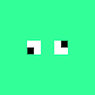 Kevin x Pak 凯文 x 帕克数据 创建于 6 个月前，500 代币供应，5% 费用 过去 7 天没有售出 Kevin x Pak。 Kevin x Pak - 500 免费 - 两颗星，1 NFT。 Kevin x Pak NFT - 常见问题（FA